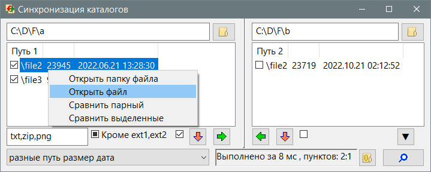

Synchronization
Назначение
Синхронизация файлов в двух папках.

Работа с программой
Работа с программой
- Перетащить папки для сравнения в окно программы и нажать поиск.
- Выбрать критерии сравнения в раскрывающемся списке.
- Кнопками-стрелками в окне программы можно переместить файлы (зелёные стрелки) или удалить (красные стрелки), но перед этим поставить галки напротив файлов, для которых нужно выполнить операцию. Все файлы можно выбрать одним кликом флажком под списком.
- Если программа выдала список файлов, которые не удалось копировать/удалить, то проверьте, что диск доступен для записи. Если операция копирования не удалась по причине атрибута файла "только чтение", то выполнить операцию удаления в окне назначения для этих же файлов, так как операция имеет флаг "принудительно" и удаляет файлы "только для чтения". В будущем возможно появится флаг снятия атрибутов в папке назначения перед копированием, проблема что в Linux флаги атрибутов другие, а операция требуется одинаковая по смыслу.
- Задать маску перечислением расширений, это заметно ускоряет поиск.
- Строка состояния покажет за какое время выполнена операция и сколько файлов отображается в списках.
- Кнопка поиска пустых папок выводит их в окно результатов и позволяет удалить. Пустые папки могут появится в результате синхронизации при удалении лишних файлов.
- Чтобы посмотреть различия в файлах, вызвать ПКМ и выбрать "Сравнить парные", при этом 2 файла с одинаковым относительным путём откроются в программе сравнения, если она указана в ini-файле (Compare=).
Параметры ini-файла
[Set]
ww=800 - Ширина окна
wh=600 - Высота окна
wm=0 - Флаг развёрнутости окна на весь экран
Compare=C:\Program Files\WinMerge\WinMergeU.exe - Программа сравнения файлов, для Lunux значение может быть /usr/bin/meld
Семплы
[Default]
Path1= - Путь слева
Path2= - Путь справа
Mode=3 - номер пункта в раскрывающемся списке, критерии сравнения
Mask=txt,ini,cfg - перечисление расширений, которые обрабатываются при поиске. Пустая строка - файлы без расширений.
Tmask=0 - тип маски: 0 - все файлы, 1 - указанные в маске, -1 - кроме указанных в маске.
Семплы это секции ini-файла заготовленные для поиска. Все секции кроме [Set] являются семплами для поиска. Они отображаются в меню выбора семплов. Там же есть пункты меню: "Открыть ini-файл" и "Добавить в ini-файл", чтобы выполнить ручную правку или добавить текущие настройки окна в семпл.
Ком-строка
Ком-строка принимает 1 или 2 папки, чтобы вставить их в правое и левое поле программы. Использовать контекстное меню "Отправить", положив в папку "%AppData%\Microsoft\Windows\SendTo" ярлык программы. Также можно через реестр добавив раздел "HKEY_CLASSES_ROOT\Directory\shell\Synchronization\command" с командой "путь_проги" "%1", но добавляет путь только в левое поле, а в правое перетаскивать из проводника.
Windows Registry Editor Version 5.00
[HKEY_CLASSES_ROOT\Directory\shell\Synchronization\command]
@="\"C:\\Users\\User\\AppData\\Roaming\\AZJIO_Soft\\Synchronization\\Synchronization.exe\" \"%1\""
Linux
В Linux появляется галочка "find" предназначенная для использования пакета "findutils" для поиска файлов, это работает немного быстрее.
Для большей гибкости, которая позволяет "find" в режиме "Все файлы" добавлено следующей поведение:
- Если маска пуста "" или "*.*", то поиск всех файлов.
- Если маска пуста или "*", то поиск файлов без расширений (в имени файла нет точки).
- В ином случае используется Wildcard, то есть "*.jpg" или "IMG*.jpg", то есть маска с подстановочными символами "*?".
Во первых Wildcard не работает ни в каких других режимах, только здесь. Во вторых файлы без расширений, если без "find" то надо указать пустую маску в режиме "Маска ext1,ext2", а с галкой "find" выше указанным способом. "find" игнорирует символьные ссылки.
Дополнительные возможности
Можно выполнить сравнение двух каталогов, но изменить путь папки назначения, тогда копируемые файлы будут перемещаться в отдельный каталог, не тот с которым производилось сравнение.